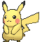
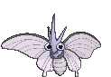
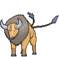
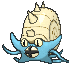

Tips :
Tips : Info :
[numéro] = le numéro du pokemon dans le "pokedex" entier. 1er nom = nom français -> 2eme nom = nom anglais /Type = type(s) du pokemon
Tips :
[number] = the pokemon's number in all pokedex 1rst name = french name -> 2nd name = english name /Type = pokemon's type
 [001] Bulbizarre -> Bulbasaur/ Type : Plante (Grass) - Poison
[001] Bulbizarre -> Bulbasaur/ Type : Plante (Grass) - Poison
 [002] Herbizarre -> Ivysaur / Type : Plante (Grass) - Poison
[002] Herbizarre -> Ivysaur / Type : Plante (Grass) - Poison
 [003] Florizarre -> Venusaur / Type : Plante (Grass) - Poison
[003] Florizarre -> Venusaur / Type : Plante (Grass) - Poison
 [004] Salamèche -> Charmander / Type : Feu (Fire)
[004] Salamèche -> Charmander / Type : Feu (Fire)
 [005] Reptincel -> Charmeleon / Type : Feu (Fire)
[005] Reptincel -> Charmeleon / Type : Feu (Fire)
 [006] Dracaufeu -> Charizard / Type : Feu (Fire) - Vol (Flying)
[006] Dracaufeu -> Charizard / Type : Feu (Fire) - Vol (Flying)
 [007] Carapuce -> Squirtle / Type : Eau (Water)
[007] Carapuce -> Squirtle / Type : Eau (Water)
 [008] Carabaffe -> Wartortle / Type : Eau (Water)
[008] Carabaffe -> Wartortle / Type : Eau (Water)
 [009] Tortank -> Blastoise / Type : Eau (Water)
[009] Tortank -> Blastoise / Type : Eau (Water)
 [010] Chenipan -> Caterpie / Type : Insect (Bug)
[010] Chenipan -> Caterpie / Type : Insect (Bug)
 [011] Chrysacier -> Metapod / Type : Insect (Bug)
[011] Chrysacier -> Metapod / Type : Insect (Bug)
[012] Papilusion -> Butterfree / Type : Insect (Bug) - Vol (Flying)
 [013] Aspicot -> Weedle / Type : Insect (Bug) - Poison
[013] Aspicot -> Weedle / Type : Insect (Bug) - Poison
 [014] Coconfort -> Kakuna / Type : Insect (Bug) - Poison
[014] Coconfort -> Kakuna / Type : Insect (Bug) - Poison
 [015] Dardargnan -> Beedrill / Type : Insect (Bug) - Poison
[015] Dardargnan -> Beedrill / Type : Insect (Bug) - Poison
 [016] Roucool -> Pidgey / Type : Normal - Vol (Flying)
[016] Roucool -> Pidgey / Type : Normal - Vol (Flying)
 [017] Roucoups -> Pidgeotto / Type : Normal - Vol (Flying)
[017] Roucoups -> Pidgeotto / Type : Normal - Vol (Flying)
 [018] Roucarnage -> Pidgeot / Type : Normal - Vol (Flying)
[018] Roucarnage -> Pidgeot / Type : Normal - Vol (Flying)
[019] Rattata -> Rattata / Type : Normal
[020] Rattatac -> Raticate / Type : Normal
 [021] Piafabec -> Spearow / Type : Normal - Vol (Flying)
[021] Piafabec -> Spearow / Type : Normal - Vol (Flying)
 [022] Rapasdepic -> Fearow / Type : Normal - Vol (Flying)
[022] Rapasdepic -> Fearow / Type : Normal - Vol (Flying)
 [023] Abo -> Ekans / Type : Poison
[023] Abo -> Ekans / Type : Poison
 [024] Arbok -> Arbok / Type : Poison
[024] Arbok -> Arbok / Type : Poison
 [025] Pikachu -> Pikachu / Type : Electric
[026] Raichu -> Raichu / Type : Electric
 [027] Sabelette -> Sandshrew / Type : Sol (Ground)
[027] Sabelette -> Sandshrew / Type : Sol (Ground)
 [028] Sablaireau -> Sandslash / Type : Sol (Ground)
[028] Sablaireau -> Sandslash / Type : Sol (Ground)
 [029] Nidoran F -> Nidoran F / Type : Poison
[029] Nidoran F -> Nidoran F / Type : Poison
 [030] Nidorina -> Nidorina / Type : Poison
[030] Nidorina -> Nidorina / Type : Poison
 [031] Nidoqueen -> Nidoqueen / Type : Poison - Sol (Ground)
[031] Nidoqueen -> Nidoqueen / Type : Poison - Sol (Ground)
 [032] Nidoran M -> Nidoran M / Type : Poison
[032] Nidoran M -> Nidoran M / Type : Poison
 [033] Nidorino -> Nidorino / Type : Poison
[033] Nidorino -> Nidorino / Type : Poison
 [034] Nidoking -> Nidoking / Type : Poison - Sol (Ground)
[034] Nidoking -> Nidoking / Type : Poison - Sol (Ground)
 [035] Mélofée -> Clefairy / Type : Féé (Fairy)
[035] Mélofée -> Clefairy / Type : Féé (Fairy)
 [036] Mélodelfe -> Clefable / Type : Fée (Fairy)
[036] Mélodelfe -> Clefable / Type : Fée (Fairy)
 [037] Goupix -> Vulpix / Type : Feu (Fire)
[037] Goupix -> Vulpix / Type : Feu (Fire)
 [038] Feunard -> Ninetales / Type : Feu (Fairy)
[038] Feunard -> Ninetales / Type : Feu (Fairy)
 [039] Rondoudou -> Jigglypuff / Type : Normal - Féé (Fairy)
[039] Rondoudou -> Jigglypuff / Type : Normal - Féé (Fairy)
 [040] Grodoudou -> Wigglytuff / Type : Normal - Fée (Fairy)
[040] Grodoudou -> Wigglytuff / Type : Normal - Fée (Fairy)
[041] Nosferapti -> Zubat / Type : Poison - Vol (Flying)
[042] Nosferalto -> Golbat / Type : Poison - Vol (Flying)
 [043] Mystherbe -> Oddish / Type : Plante (Grass) - Poison
[043] Mystherbe -> Oddish / Type : Plante (Grass) - Poison
[044] Ortide -> Gloom / Type : Plante (Grass) - Poison
[045] Rafflesia -> Vileplume / Type : Plante (Grass) - Poison
 [046] Paras -> Paras / Type : Insect (Bug) - Plante (Grass)
[046] Paras -> Paras / Type : Insect (Bug) - Plante (Grass)
 [047] Parasect -> Parasect / Type : Insect (Bug) - Plante (Grass)
[047] Parasect -> Parasect / Type : Insect (Bug) - Plante (Grass)
 [048] Mimitoss -> Venonat / Type : Insect (Bug) - Poison
[048] Mimitoss -> Venonat / Type : Insect (Bug) - Poison
 [049] Aéromite -> Venomoth / Type : Insect (Bug) - Poison
 [050] Taupiqueur -> Diglett / Type : Sol (Ground)
[050] Taupiqueur -> Diglett / Type : Sol (Ground)
 [051] Triopikeur -> Dugtrio / Type : Sol (Ground)
[051] Triopikeur -> Dugtrio / Type : Sol (Ground)
 [052] Miaouss -> Meowth / Type : Nomal
[052] Miaouss -> Meowth / Type : Nomal
 [053] Persian -> Persian / Type : Normal
[053] Persian -> Persian / Type : Normal
 [054] Psykokwak -> Psyduck / Type : Eau (Water)
[054] Psykokwak -> Psyduck / Type : Eau (Water)
 [055] Akwakwak -> Golduck / Type : Eau (Water)
[055] Akwakwak -> Golduck / Type : Eau (Water)
 [056] Férosinge -> Mankey / Type : Combat (Fighting)
[056] Férosinge -> Mankey / Type : Combat (Fighting)
 [057] Colossinge -> Primeape / Type : Combat (Fighting)
[057] Colossinge -> Primeape / Type : Combat (Fighting)
 [058] Caninos -> Growlithe / Type : Feu (Fire)
[058] Caninos -> Growlithe / Type : Feu (Fire)
 [059] Arcanin -> Arcanine / Type : Feu (Fire)
[059] Arcanin -> Arcanine / Type : Feu (Fire)
 [060] Ptitard -> Poliwag / Type : Eau (Water)
[060] Ptitard -> Poliwag / Type : Eau (Water)
 [061] Têtarte -> Poliwhirl / Type : Eau (Water)
[061] Têtarte -> Poliwhirl / Type : Eau (Water)
 [062] Tartard -> Poliwrath / Type : Eau (Water)- Combat (Fighting)
[062] Tartard -> Poliwrath / Type : Eau (Water)- Combat (Fighting)
 [063] Abra -> Abra / Type : Psy (Psychic)
[063] Abra -> Abra / Type : Psy (Psychic)
[064] Kadabra -> Kadabra / Type : Psy (Psychic)
[065] Alakazam -> Alakazam / Type : Psy (Psychic)
 [066] Machoc -> Machop / Type : Combat (Fighting)
[066] Machoc -> Machop / Type : Combat (Fighting)
 [067] Machopeur -> Machoke / Type : Combat (Fighting)
[067] Machopeur -> Machoke / Type : Combat (Fighting)
 [068] Mackogneur -> Machamp / Type : Combat (Fighting)
[068] Mackogneur -> Machamp / Type : Combat (Fighting)
 [069] Chétiflor -> Bellsprout / Type : Plante (Grass) - Poison
[069] Chétiflor -> Bellsprout / Type : Plante (Grass) - Poison
 [070] Boustiflor -> Weepinbell / Type : Plante (Grass) - Poison
[070] Boustiflor -> Weepinbell / Type : Plante (Grass) - Poison
 [071] Empiflor -> Victreebel / Type : Plante (Grass) - Poison
[071] Empiflor -> Victreebel / Type : Plante (Grass) - Poison
 [072] Tentacool -> Tentacool / Type : Eau (Water) - Poison
[072] Tentacool -> Tentacool / Type : Eau (Water) - Poison
 [073] Tentacruel -> Tentacruel / Type : Eau (Water) - Poison
[073] Tentacruel -> Tentacruel / Type : Eau (Water) - Poison
 [074] Racaillou -> Geodude / Type : Roche (Rock) - Sol (Ground)
[074] Racaillou -> Geodude / Type : Roche (Rock) - Sol (Ground)
 [075] Gravalanch -> Graveler / Type : Roche (Rock) - Sol (Ground)
[075] Gravalanch -> Graveler / Type : Roche (Rock) - Sol (Ground)
 [076] Grolem -> Golem / Type : Roche (Rock) - Sol (Ground)
[076] Grolem -> Golem / Type : Roche (Rock) - Sol (Ground)
 [077] Ponyta -> Ponyta / Type : Feu (Fire)
[077] Ponyta -> Ponyta / Type : Feu (Fire)
 [078] Galopa -> Rapidash / Type : Feu (Fire)
[078] Galopa -> Rapidash / Type : Feu (Fire)
 [079] Ramoloss -> Slowpoke / Type : Eau (Water) - Psy (Psychic)
[079] Ramoloss -> Slowpoke / Type : Eau (Water) - Psy (Psychic)
 [080] Flagadoss -> Slowbro / Type : Eau (Water) - Psy (Psychic)
[080] Flagadoss -> Slowbro / Type : Eau (Water) - Psy (Psychic)
 [081] Magnéti -> Magnemite/ Type : Acier (Steel) - Electric
[081] Magnéti -> Magnemite/ Type : Acier (Steel) - Electric
 [082] Magnéton -> Magneton / Type : Acier (Steel) - Electric
[082] Magnéton -> Magneton / Type : Acier (Steel) - Electric
 [083] Canarticho -> Farfetch'd / Type : Normal - Vol (Flying)
[083] Canarticho -> Farfetch'd / Type : Normal - Vol (Flying)
[084] Doduo -> Doduo / Type : Normal - Vol (Fplying)
[085] Dodrio -> Dodrio / Type : Normal - Vol (Flying)
 [086] Otaria -> Seel / Type : Eau (Watr) - Eau (Water)
[086] Otaria -> Seel / Type : Eau (Watr) - Eau (Water)
[087] Lamantine -> Dewgong / Type : Eau (Water) - Glace (Ice)
 [088] Tadmorv -> Grimer / Type : Poison
[088] Tadmorv -> Grimer / Type : Poison
 [089] Grotadmorv -> Muk / Type : Poison
[089] Grotadmorv -> Muk / Type : Poison
 [090] Kokiyas -> Shellder / Type : Eau (Water)
[090] Kokiyas -> Shellder / Type : Eau (Water)
 [091] Crustabri -> Cloyster / Type : Eau (Water) - Glace (Ice)
[091] Crustabri -> Cloyster / Type : Eau (Water) - Glace (Ice)
 [092] Fantominus -> Gastly / Type : Spectre (Ghost) - Poison
[092] Fantominus -> Gastly / Type : Spectre (Ghost) - Poison
 [093] Spectrum -> Haunter / Type : Spectre (Ghost) - Poison
[093] Spectrum -> Haunter / Type : Spectre (Ghost) - Poison
 [094] Ectoplasma -> Gengar / Type : Spectre (Ghost) - Poison
[094] Ectoplasma -> Gengar / Type : Spectre (Ghost) - Poison
 [095] Onix -> Onix / Type : Roche (Rock) - Sol (Ground)
[095] Onix -> Onix / Type : Roche (Rock) - Sol (Ground)
 [096] Soporifik -> Drowzee / Type : Psy (Psychic)
[096] Soporifik -> Drowzee / Type : Psy (Psychic)
[097] Hypnomade -> Hypno / Type : Spectre (Ghost) - Poison
 [098] Krabby -> Krabby / Type : Eau (Water)
[098] Krabby -> Krabby / Type : Eau (Water)
 [099] Krabboss -> Kingler / Type : Eau (Water)
[099] Krabboss -> Kingler / Type : Eau (Water)
 [100] Voltorbe -> Voltorb / Type : Electric
[100] Voltorbe -> Voltorb / Type : Electric
 [101] Electrode -> Electrode / Type : Electric
[101] Electrode -> Electrode / Type : Electric
 [102] Noeunoeuf -> Exeggcute / Type : Plante (Grass) - Psy (Psychic)
[102] Noeunoeuf -> Exeggcute / Type : Plante (Grass) - Psy (Psychic)
 [103] Noadkoko -> Exeggutor / Type : Plante (Grass) - Psy (Psychic)
[103] Noadkoko -> Exeggutor / Type : Plante (Grass) - Psy (Psychic)
 [104] Osselait -> Cubone / Type : Sol (Ground)
[104] Osselait -> Cubone / Type : Sol (Ground)
 [105] Ossatueur -> Marowak / Type : Sol (Ground)
[105] Ossatueur -> Marowak / Type : Sol (Ground)
 [106] Kicklee -> Hitmonlee / Type : Combat (Fighting)
[106] Kicklee -> Hitmonlee / Type : Combat (Fighting)
 [107] Tygnon -> Hitmonchan / Type : Combat (Fighting)
[107] Tygnon -> Hitmonchan / Type : Combat (Fighting)
 [108] Excelangue -> Lickitung / Type : Normal
[108] Excelangue -> Lickitung / Type : Normal
 [109] Smogo -> Koffing / Type : Poison
[109] Smogo -> Koffing / Type : Poison
 [110] Smogogo -> Weezing / Type : Poison
[110] Smogogo -> Weezing / Type : Poison
[111] Rhinocorne -> Rhyhorn / Type : Sol (Ground) - Roche (Rock)
[112] Rhinoféros -> Rhydon / Type : Sol (Ground) - Roche (Rock)
 [113] Leveinard -> Chansey / Type : Normal
[113] Leveinard -> Chansey / Type : Normal
 [114] Saquedeneu -> Tangela / Type : Plante (Grass)
[114] Saquedeneu -> Tangela / Type : Plante (Grass)
 [115] Kangourex -> Kangaskhan / Type : Normal
[115] Kangourex -> Kangaskhan / Type : Normal
[116] Hypotrempe -> Horsea / Type : Eau (Water)
 [117] Hypocéan -> Seadra / Type : Eau (Water)
[117] Hypocéan -> Seadra / Type : Eau (Water)
[118] Poissirène -> Goldeen / Type : Eau (Water)
[119] Poissoroy -> Seaking / Type : Eau (Water)
 [120] Stari -> Staryu / Type : Eau (Water)
[120] Stari -> Staryu / Type : Eau (Water)
 [121] Staross -> Starmie / Type : Eau (Water) - Psy (Psychic)
[121] Staross -> Starmie / Type : Eau (Water) - Psy (Psychic)
 [122] M.Mime -> Mr. Mime / Type : Psy (Psychic) - Fée (Fairy)
[122] M.Mime -> Mr. Mime / Type : Psy (Psychic) - Fée (Fairy)
[123] Insécateur -> Scyther / Type : Insect (Bug) - Vol (Flying)
 [124] Lippoutou -> Jynx / Type : Glace (Ice) - Psy (Psychic)
[124] Lippoutou -> Jynx / Type : Glace (Ice) - Psy (Psychic)
 [125] Elektek -> Electabuzz / Type : Electric
[125] Elektek -> Electabuzz / Type : Electric
 [126] Magmar -> Magmar / Type : Feu (Fire)
[126] Magmar -> Magmar / Type : Feu (Fire)
 [127] Scarabrute -> Pinsir / Type : Insect (Bug)
[127] Scarabrute -> Pinsir / Type : Insect (Bug)
 [128] Tauros -> Tauros / Type : Normal
 [129] Magicarpe -> Magikarp / Type : Eau (Water)
[129] Magicarpe -> Magikarp / Type : Eau (Water)
[130] Léviator -> Gyarados / Type : Eau (Water) - Vol (Flying)
 [131] Lokhlass -> Lapras / Type : Eau (Water) - Glace (Ice)
[131] Lokhlass -> Lapras / Type : Eau (Water) - Glace (Ice)
 [132] Métamorph -> Ditto / Type : Normal
[132] Métamorph -> Ditto / Type : Normal
 [133] Evolie -> Eevee / Type : Normal
[133] Evolie -> Eevee / Type : Normal
 [134] Aquali -> Vaporeon / Type : Eau (Water)
[134] Aquali -> Vaporeon / Type : Eau (Water)
 [135] Voltali -> Jolteon / Type : Electric
[135] Voltali -> Jolteon / Type : Electric
 [136] Pyroli -> Flareon / Type : Feu (Fire)
[136] Pyroli -> Flareon / Type : Feu (Fire)
 [137] Porygon -> Prygon / Type : Normal
[137] Porygon -> Prygon / Type : Normal
 [138] Amonita -> Omanyte / Type : Roche (Rock) - Eau (Water)
[138] Amonita -> Omanyte / Type : Roche (Rock) - Eau (Water)
 [139] Amonistar -> Omastar / Type : Roche (Rock) - Eau (Water)
 [140] Kabuto -> Kabuto / Type : Roche (Rock) - Eau (Water)
[140] Kabuto -> Kabuto / Type : Roche (Rock) - Eau (Water)
 [141] Kabutops -> Kabutops / Type : Roche (Rock) - Eau (Water)
[141] Kabutops -> Kabutops / Type : Roche (Rock) - Eau (Water)
[142] Ptéra -> Aerodactyl / Type : Roche (Rock) - Vol (Flying)
 [143] Ronflex -> Snorlax / Type : Normal
[143] Ronflex -> Snorlax / Type : Normal
 [144] Artikodin -> Articuno / Type : Glace (Ice) - Vol (Flying)
[144] Artikodin -> Articuno / Type : Glace (Ice) - Vol (Flying)
 [145] Electhor -> Zapdos / Type : Feu Electric - Vol (Flying)
[145] Electhor -> Zapdos / Type : Feu Electric - Vol (Flying)
 [146] Sulfura -> Moltres / Type : Feu (Fire) - Vol (Flying)
[146] Sulfura -> Moltres / Type : Feu (Fire) - Vol (Flying)
 [147] Minidraco -> Dratini / Type : Dragon
[147] Minidraco -> Dratini / Type : Dragon
 [148] Draco -> Dragonair / Type : Dragon
[148] Draco -> Dragonair / Type : Dragon
 [149] Dracolosse -> Dragonite / Type : Dragon - Vol (Flying
[149] Dracolosse -> Dragonite / Type : Dragon - Vol (Flying
 [150]
[150]  [151]
[151]